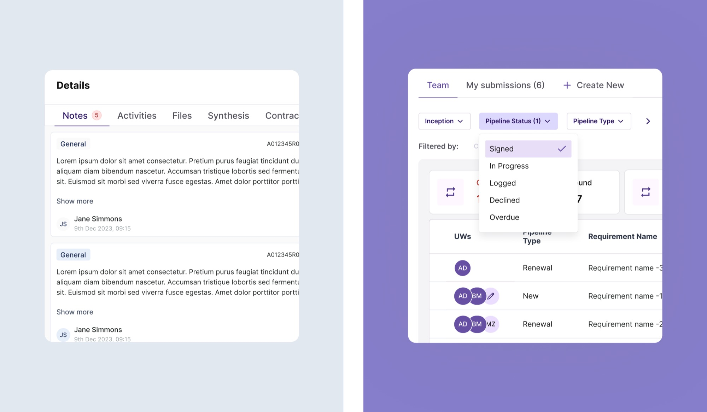
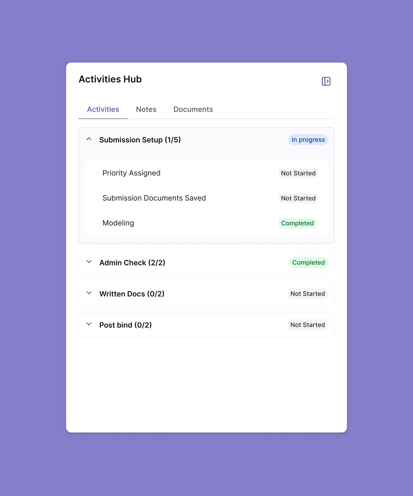

- Sole Product Designer
- UX + Workflow
- InsurTech
- 2025
Launchpad
Improving underwriting efficiency through behaviour-driven design.
I was brought in as the sole designer to shape the next version of Launchpad — an internal underwriting application where insurance teams review and triage submissions, manage workflows, and make faster, more confident decisions.
Rather than redesign on instinct, I started with what 2,720 monthly sessions of real behaviour could tell us. The data pointed somewhere unexpected, and it reframed the whole navigation model.
Teams in active use
68 underwriters across 18 teams, every working day.
Monthly active usage
One minute saved per session is 45+ hours a month.
Usage at a glance
Launchpad is not a product people dip into. It is where underwriting teams spend their working day, in a high-volume, high-stakes environment where speed and accuracy both matter.
That scale is what made behavioural data worth trusting — and what made small inefficiencies expensive.
Two pages, one workflow
The workflow centred on two screens, and almost everything happened between them.
Pipeline View — a table-based workspace for filtering, triaging and updating submissions.
Submission Detail — a deep-dive view with full context, documents, analysis and activity history.


Start at the UX audit
As the sole product designer on the next version, I began with a structured UX audit to find where the interface was costing people time.
I annotated friction directly on the live screens, then clustered findings into themes before touching any analytics — so the data would answer questions I had actually formed.


Understanding real usage
I analysed funnel behaviour, heat maps, feature usage and session data to understand how underwriters actually worked — not how the product assumed they did.
- Where does decision-making actually happen?
- What information do users need during triage?
- How can the interface support comparison across submissions?
- Are users navigating efficiently, or compensating for missing context?

What the data revealed
- Only 46.1% of users entered the submission detail page.
- The Back button was the most-used interaction on submission detail.
- Users frequently looped between pipeline and submission detail.
- Submission detail was used selectively, to reach specific context — especially summaries and notes.
Fast comprehension first, depth on demand.
The pipeline view was functioning as the true decision workspace, while submission detail acted as a short-term inspection layer. Underwriters relied on the pipeline for orientation and comparison, opening detail mainly to verify context before returning to continue their review.
The Back button wasn't a navigation failure. It was users telling us where they wanted to be.
Design direction
I proposed a direction that moved decision-support closer to where decisions were already happening, and resolved the friction the audit surfaced.
- Rebalanced hierarchy to surface key signals closer to the pipeline.
- Cut navigation overhead with pre-filtered views and filters-on-demand.
- A contextual Details drawer for files, AI insights, history and notes.
- An adaptive viewport for dense analysis without losing context.
Reducing noise, preserving control
A filters-on-demand system reduced visual complexity while keeping flexibility. Frequently used filters were prioritised, and reusable presets let underwriters re-establish context quickly across sessions.
I then consolidated key submission information into a contextual drawer, reachable without leaving the pipeline.


Adaptive viewport for high-density data
To accommodate dense tables, I designed an adaptive viewport that supports uninterrupted analysis while preserving quick access to workflow context and collaboration tools.
Impact
- Scale makes small wins large. With 224 hours of monthly usage, reducing one minute per session saves over 45 hours a month across underwriting teams.
- A data-backed direction. Due to roadmap priorities the work was positioned as a future optimisation, with a clear evidence base for improving underwriting efficiency at scale.
- Behaviour over opinion. The strongest argument in the room wasn't a mockup — it was 7,090 sessions showing where people actually worked.